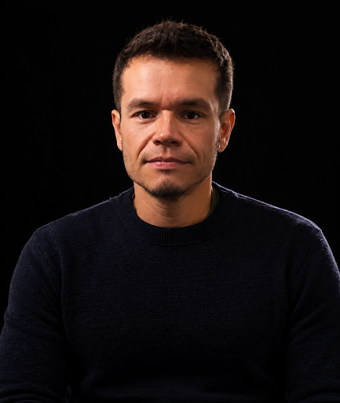
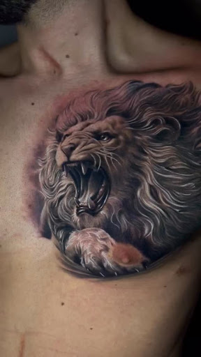
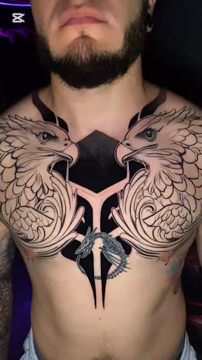
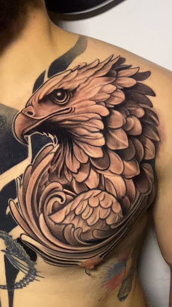

Harry Duarte.
Maestría en la piel.
Pionero con más de 23 años consagrados a la excelencia y devoción anatómica. Harry Duarte concibe cada trazo como una pieza irrepetible de alta costura: un diálogo íntimo entre rigor quirúrgico, estética sombría y la trascendencia del arte permanente.

Harry Duarte • Master Tattoo Artist
Más de 23 años de trayectoria & autoría
Agenda selectiva
Cupo limitado por mes • Valera, Edo. Trujillo
Estilos Distintivos
Cada disciplina es ejecutada con pigmentos orgánicos de saturación extrema y agujas quirúrgicas de grado médico.
Blackwork Geométrico
Bloques de carbón absoluto yuxtapuestos con patrones de geometría sagrada y simetría arquitectónica implacable.
Realismo Sombrío
Micro-gradientes tonales, esculturas clásicas fracturadas y texturas tenebristas de inspiración renacentista y barroca.
Dark Lettering
Caligrafía visceral, fracturas góticas modernistas y tipografía gestual diseñada específicamente sobre la anatomía ósea.
Flash Editorial
Piezas de tiraje único e irrepetible. Motivos de iconografía sacra pagana, dagas ornamentadas y botánica marchita.
Obras Destacadas

León Monárquico
Composición de gran impacto anatómico en pectoral. Saturación de negros contrastados, textura minuciosa de melena y ferocidad orgánica.

Retrato Conmemorativo
Aguja 03RL y escala de grises diluida para capturar la calidez de la mirada y las sutiles líneas de expresión.

Heráldica Bicéfala
Geometría central con águilas enfrentadas en armonía con la clavícula y el torso.

Águila Imperial
Plumaje con gradientes sombríos envolviendo el relieve del músculo pectoral.

Shishi Guardián
Bestiario oriental con saturación densa y caligrafía gótica sobre el muslo.
Sin trucos.
Sin concesiones.
Solo rigor.
"El cuerpo es el soporte más noble y exigente que existe en el arte visual. No admite arrepentimientos."
— Harry Duarte • Más de 23 años de maestría • Piezas únicas & rigor clínico
Esterilización y Grado Médico
Cabina de atmósfera controlada con autoclave de clase B y materiales 100% descartables de un solo uso de origen quirúrgico. Protocolo hospitalario certificado.
Ergonomía & Adaptabilidad Ósea
No adaptamos plantillas estándar. El diseño se dibuja o ajusta directamente sobre tu fisonomía viva respetando las líneas de tensión muscular y el movimiento orgánico del cuerpo.
Privacidad Monástica
El atelier permanece cerrado a transeúntes. No hay interrupciones ni espectadores. Solo el artista, la música curada en vinilo y la concentración absoluta requerida por la aguja.
Conoce al equipo
Artistas & Filosofía
Palabras de Clientes
"La pulcritud de las líneas desafía cualquier expectativa. Un año después de la sesión, la densidad del negro permanece inalterable como si fuera esmalte líquido."
Valentina M. • Directora de Arte
Obra de torso completo
"La experiencia es de alta costura total. Cero distracciones, conversación erudita sobre arte sombrío y un respeto ceremonial por el dolor y la calma."
Rodrigo G. • Músico & Compositor
Manga blackwork geométrico
"Buscaba un micro-realismo que no se convirtiera en una mancha difusa en diez años. La precisión técnica que aplican aquí pertenece a otra liga."
Elena R. • Arquitecta
Pieza de espalda en aguja única
Tu próxima obra comienza con una conversación
Aceptamos un número deliberadamente reducido de proyectos mensuales para garantizar inmersión creativa plena y cicatrización supervisada de cada pieza.
Tiempo estimado de respuesta para propuestas de proyecto: 24 a 48 horas laborales.